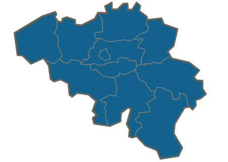

Listes à gogo !
Liste des rues de Belgique
Sous liste = une liste (ol ou ul) dans un élément de liste (li)
- Anvers
- Brabant flamand
- Flandre occidentale
- Flandre orientale
- Limbourg
- Brabant wallon
- Hainaut
- Liège
- Amay
- Rue Albert Ier
- Rue Alfred Delcominette
- …
- Amel (Amblève)
- Ans
- Anthisnes
- Aubel
- Place Albert Ier
- Clos des Aubépines
- Rue Albert Baltus
- …
- …
- luxembourg
- Namur
Illustration

Exercice réalisé dans le cadre de la remédiation de Création de pages Web du 1er Bac en Infographie.
Énoncé et matériel disponibles sur https://github.com/hepl-cpw/html-rem-listes-a-gogo3-3.